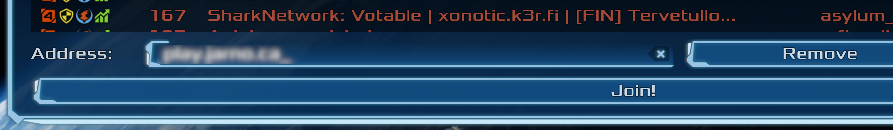

Note that the download has the executable for all OS inside of it.
Go to "Multiplayer" and click on the "Profile" button to set your in-game name.
To connect to the game server, click on the "Servers" button. At the bottom of the screen you can fill in {{ site.content.domain_name }} in the Address field. Then press Join.
